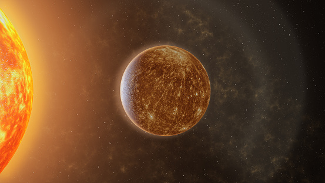
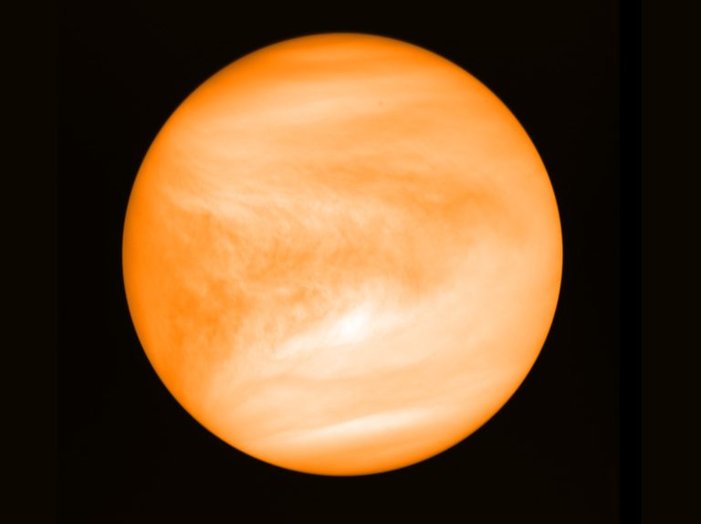
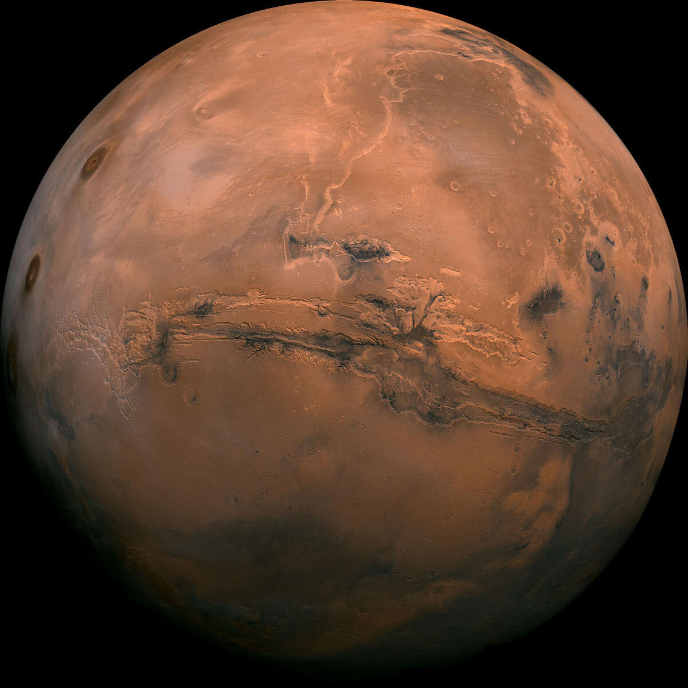
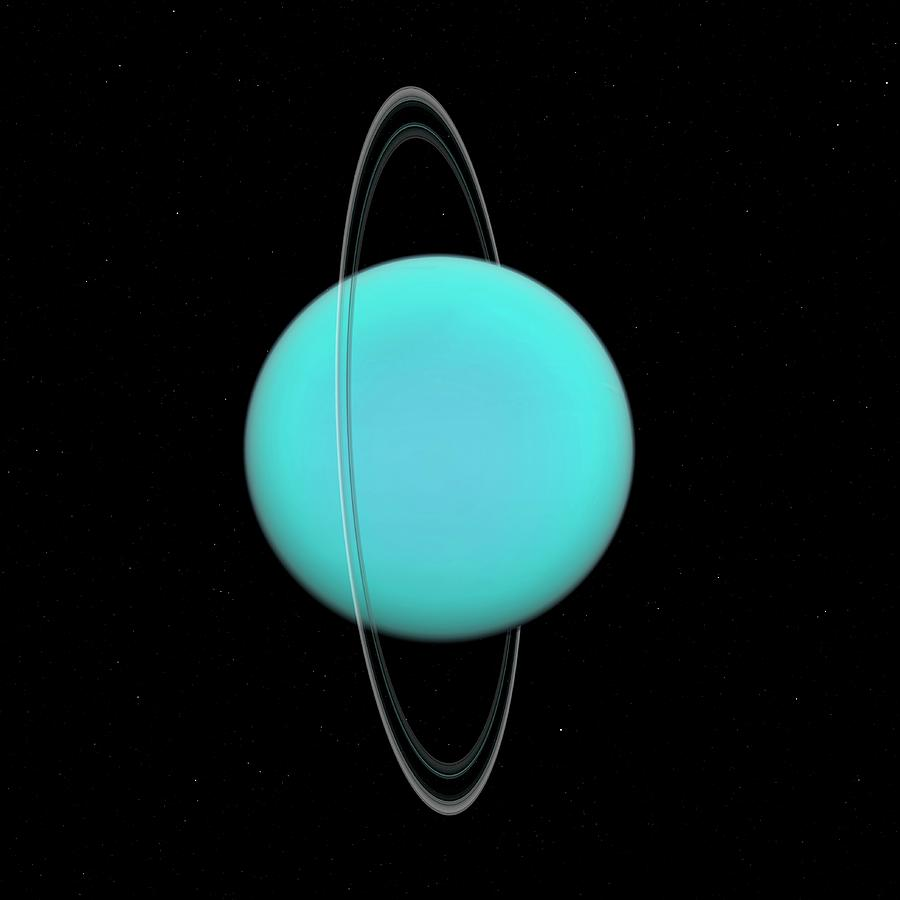
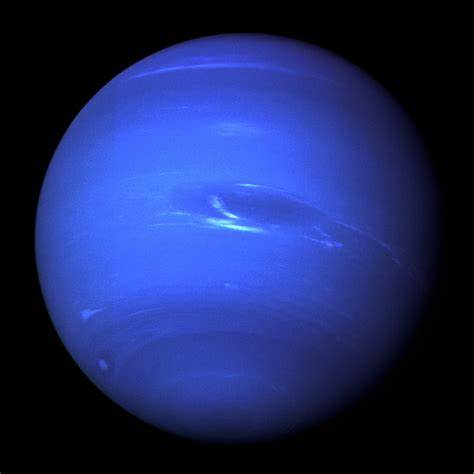

My homework html website today you wil learn about planets
There are 9 planets in the solor system.
- Mercury

Mercury is closest to the sun, it takes about 55 days to rotate around the sun.
- Venus

This is the hotest planet in the Solar System. It takes about 255 days for venus to rotate around the sun.
- Earth

This is where we live on the only planet with life so far Earth.It takes 365 days for earth to rotate around the sun once.
- Mars

This planet is called the red dust planet because of it's red dust. It is currently on exploration. Mars takes about 87 days to make a round around the sun.
- Jupitar

This is the biggest planet in the solar System. It is know for it's red spot that was a strom. It takes Jupitar over 4000 days to orbit the sun.
- Saturn
 The planet know for it's rings, takes 10,000 days to rotate around the sun.
The planet know for it's rings, takes 10,000 days to rotate around the sun.
- Uranus

It is a blue planet with rings. It orbits the sun in about 30,659 days.
- Neptune

The fartest planet from the sun, and the coldest. It is blue in color and it takes over 60,000 days to orbit the sun.